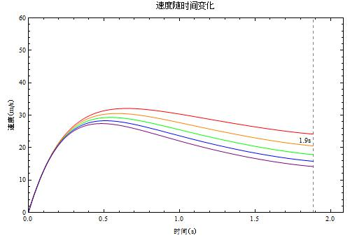
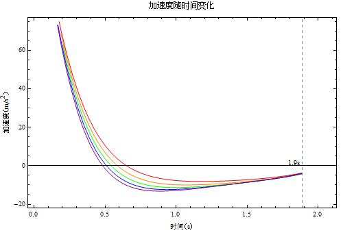
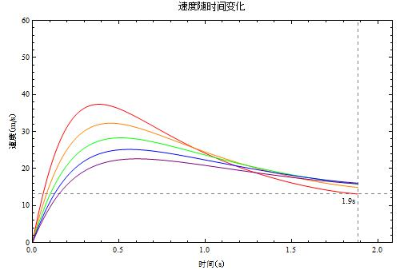
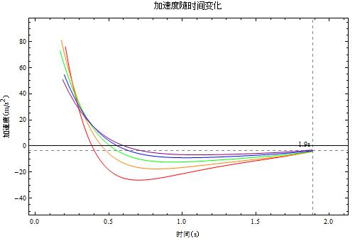
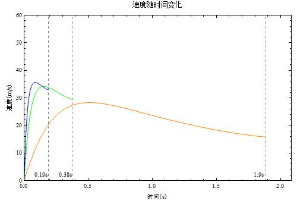
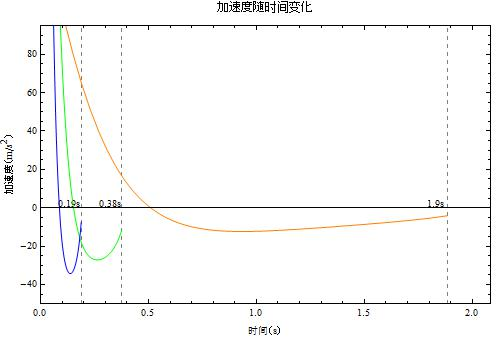
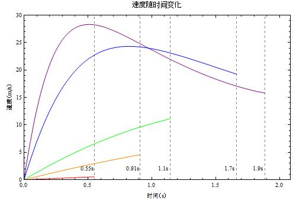
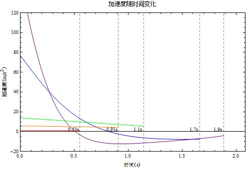
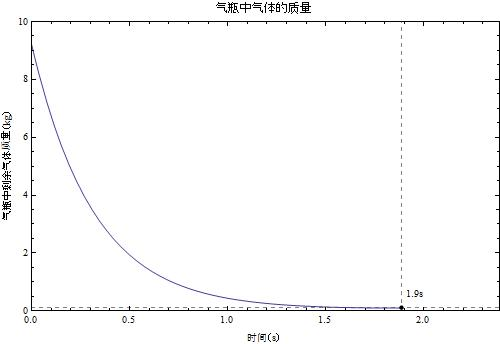

如何攻击巨人——立体行动装置使用要点
已经在媒体发表，请勿转载。
107年前，巨人突然出现，人类被迫蜷缩在三重高大的墙内，直到巨人再次打破这一百多年来平静的日子。
艾伦和三笠，同所有兵团的士兵一起，开始了他们对抗巨人的生活。然而巨人体型巨大，生性凶悍，见人就吃，而且受到破坏的身体可以短时间内自动复原，即便脑袋被轰掉也是如此。
目前所知他们唯一的致命点是后颈。因此人类使用立体机动装置来快速移动，在巨人后颈挥刀砍下，巨人就可以消失。所幸大部分普通巨人行动迟缓，所以敏捷技能就是人类取胜的关键，而立体机动装置，也就成为一个很重要的装备。虽然很多情报没有公开，但是我们依然可以进行一些简要的分析。

立体机动装置使用要点
立体机动装置有一项功能是通过喷气来推动人体运动，类似于火箭助推。就像下图这样：


当使用气体来助推时，掌握一些要点可以使得我们的飞行更有效率。
- 低头收腿缩胳膊或者头朝向前方
低头收腿缩胳膊这样一个猥琐的姿势，可以确保人前进的时候风阻比较小。或者，让头部朝向运动的方向，类似上图中艾伦的姿势。
那么人的姿势到底对运动有多大的影响呢？我们考虑一个特殊情况，即在竖直地吊在一根无限长的绳子上，利用压缩空气向后喷出做为动力，从静止开始运动，我们可以计算然后画出速度曲线。这里为了简便，把人体简化成一个迎风的平板。


红橙绿蓝紫分别对应了人体正截面积（平方米）为 0.4, 0.6, 0.8, 1, 1.2 的情况。如果我们蜷缩起来，面积只有 0.4 平方米的时候，在喷气结束后速度接近伸展开身体面积为 1.2 平米的时候末速度的两倍。但是通观本文列出来的所有因素，这个对机动性的影响并不大，因为这个因素影响的是空气阻力，而空气阻力在起步的时候的影响很小。虽然如此，一旦开始高速运动的了，我们的姿势和着装就变得特别重要，因为阻力是跟横截面积成正比的！
所以，请那位穿风衣的角色把风衣拿掉，谢谢。
- 减肥吧，士兵
我们想象一下，如果三笠是一个大胖子，那她使用立体机动装置时一定会有很多麻烦，因为使用者的体重（包括除了气体之外的所有的物品和身体的重量）会严重地影响立体机动装置的机动性能。


红橙绿蓝紫分别对应了使用者体重（千克）为 30, 40, 50, 60, 70 的情况。
使用者的体重对于机动性有很关键的影响，加速度曲线在不同的质量下差别很大。一个质量只有 30kg 的小孩子的机动性能要明显比一个 70kg 的大叔的机动性能好多了！
难道这就是为什么军团里面大家都那么苗条么？
- 使用合适大小的喷气孔
喷气孔太大？机动性能好，但是气体消耗太快。喷气孔太小？气体可以使用更长的时间，但是机动性能就差了。这需要一个平衡。


橙绿蓝分别对应的是喷气孔面积（平方米）为 0.001, 0.005, 0.01 的情况。喷气孔大到 0.01 平方米，这样开始的时候可以在 0.1 秒之内加速到约 35 米每秒的极速（先不想加速度能不能承受啦）。但是气瓶喷气也就是持续了 0.19 秒。如果让喷气孔小些，只有 0.001 平米，这样喷气可以持续 1.9 秒，但是需要大约 5 秒才能加速到极速 28 米每秒，不仅极速小，而且花的时间长，这里看加速度的图像就更明了了。
所以如果要持久，喷气孔就要小，如果要速战速决（0.2 秒的战斗么），那就用增大喷气孔的面积吧。
- 气压再高些，再高些
如果我们只有两个合起来容量 0.08 立方米的气瓶，要想立体机动装置更好用，那就增大气压吧。


红橙绿蓝紫分别对应气压（帕）为 200000, 500000, 1000000, 5000000, 10000000 的情况，也就是说分别对应大约 2 个大气压，5 个大气压，10 个大气压，50 个大气压，100 个大气压的情况。考虑到动画中所用的气瓶是很特殊的材料制作的，也不担心气瓶是否能承受得了了。
气压对于使用时间似乎贡献并不是特别大，气压比较大的时候，将压强翻倍并不会有两倍的使用时间。不过高气压确实会带来更好的机动性——加速度会明显大的多。
所以，如果不担心士兵无法承担初始的加速度，那就加压再加压。
- 多带几个气瓶
显然我们如果带四个气瓶会得到双倍的使用时间。当然，带多了气瓶，会带来更多的无效的附加的质量，会影响机动性能。
气瓶使用时间
但是，上面说的这些策略，只是美好的愿望。可能有人注意到了上面的图中会有一些竖直的虚线，这些虚线标志着气体用完所需要的时间。所以，如果考虑了气瓶的使用时间，这个装置根本就不实用。在文章默认的参数下，气体在 2 秒内就用完了。

而且更讨厌的一点是，当气瓶中的气体使用了一些，气压降下来之后，动力也就很快的降低了，实际上远远在气体用完之前，这个气瓶就不好用了，尤其是如果在高速运动中使用的话，气压太低的时候根本不足以平衡空气阻力，人体还是会不断的减速。
公式和计算
文中的计算都是考虑一种特殊情况，即在竖直地吊在一根无限长的绳子上，利用压缩空气向后喷气做为动力，从静止开始运动。计算中，考虑了空气阻力，考虑了一定大小的气瓶内装特定气压的气体有特定的质量，考虑了气体喷出后气瓶内的气压会降低，质量会减小。
本文使用的默认参数表（全部使用国际单位制）：
| 参数名称 | 参数符号 | 参数值 |
|---|---|---|
| 外界空气密度 | $\rho_0$ | $1.2\mathrm{kg/m^3}$ |
| 气体从孔中泄漏系数 | $\mu$ | 0.6 |
| 喷气孔面积 | $A$ | $0.001\mathrm{m^2}$ |
| 人体和其他装备看成平板时横截面 | $A_0$ | $1\mathrm{m^3}$ |
| 风阻系数 | $C_D$ | 2 |
| 气瓶初始气压 | $pi$ | $10000000\mathrm{Pa}$ |
| 空气摩尔质量 | $M$ | $2.9*10^-2 \mathrm{kg/mol}$ |
| 温度 | $T$ | $303\mathrm{K}$ |
| 两个气瓶总体积 | $V$ | $0.08\mathrm{m^3}$ |
| 除去气体之外的所有其他质量 | $M0$ | $50\mathrm{kg}$ |
本文使用的部分重要公式如下。
a. 空气阻力计算：
$$ f= – \frac{1}{2} C_D \rho_0 A v^2 $$
b. 气体喷出的速度（假定喷气管很短，管内没有气压降）：
$$ v_e = \sqrt{ 2 \frac{\Delta P}{\rho_e} } $$
这里 $\rho_e$ 应该是喷口附近的空气密度，但是我们近似用气瓶中的空气密度来代替。
c. 单位时间内喷出的其他质量（假定喷气管很短，管内没有气压降）：
$$ Q= \mu A \sqrt{2 \rho \Delta p} $$
d. 变质量系统运动方程：
$$ \sum_i F_i = m \frac{\mathrm d \vec v}{\mathrm dt} + \vec v \frac{\mathrm dm}{\mathrm dt} $$
本文的缺憾
- 因为数值计算的精度问题，有些加速度在时间小的时候的值计算不准确，但是因为这部分并不重要，就直接去掉了。
- 仅仅计算了一种简单的情形，没有考虑挂钩的因素。实际上绳子在这里面很关键，可以看作是主要的运动手段，而气瓶仅仅是辅助。
- 空气阻力的计算把人简化成了一块平板，这显然在高速运动的时候变得不准确了。所以所有的计算中，速度越大，计算越不准确。
- 喷气动力可能是通过了一定的控制压强的机构了。这样可以携带高压的气瓶，通过控制喷出的气体的压强来协调气瓶的使用时间和装置的机动性能。
- 使用的不一定是压缩空气，可能是其他的气体。
参考文献
- 空气阻力计算： http://www.engineeringtoolbox.com/drag-coefficient-d_627.html
- 气体喷出计算： http://en.wikipedia.org/wiki/Orifice_plate#Incompressible_flow_through_an_orifice
- 变质量体系运动方程： http://en.wikipedia.org/wiki/Tsiolkovsky_rocket_equation
代码是开源的，所有任何人都可以拿来用，或者自己重写，以扩展这部分计算。
@Aeromage 在我写给果壳的稿子下面这样回复：
这个东西最大的问题是没有考虑nozzle的设计，如果压力稍微够大的话（甚至不用三四十个psi），用de Laval nozzle可以轻易让射流的速度超过音速，这就远远优于“气罐子扎个稳定大小的洞”这么朴素的设计了……
考虑到这一点，我想这个计算有很多地方值得重新考虑。
另外，（忍不住吐槽）难道他们用这些压缩其他制作气枪/炮，岂不是更好用……

最近评论